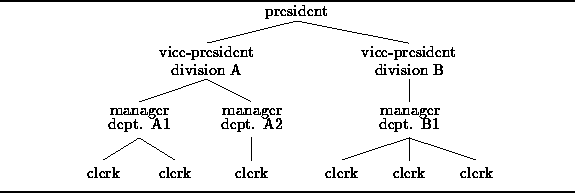

Data Structures and Algorithms
with Object-Oriented Design Patterns in Java
Data Structures and Algorithms
with Object-Oriented Design Patterns in JavaIn this chapter we consider one of the most important non-linear information structures--trees. A tree is often used to represent a hierarchy . This is because the relationships between the items in the hierarchy suggest the branches of a botanical tree.
For example, a tree-like organization chart is often used
to represent the lines of responsibility in a business
as shown in Figure  .
The president of the company is shown at the top of the tree
and the vice-presidents are indicated below her.
Under the vice-presidents we find the managers
and below the managers the rest of the clerks.
Each clerk reports to a manager,
each manager reports to a vice-president,
and each vice-president reports to the president.
.
The president of the company is shown at the top of the tree
and the vice-presidents are indicated below her.
Under the vice-presidents we find the managers
and below the managers the rest of the clerks.
Each clerk reports to a manager,
each manager reports to a vice-president,
and each vice-president reports to the president.

Figure: Representing a hierarchy using a tree.
It just takes a little imagination to see the tree in Figure .
Of course, the tree is upside-down.
However, this is the usual way the data structure is drawn.
The president is called the root of the tree
and the clerks are the leaves.
A tree is extremely useful for certain kinds of computations. For example, suppose we wish to determine the total salaries paid to employees by division or by department. The total of the salaries in division A can be found by computing the sum of the salaries paid in departments A1 and A2 plus the salary of the vice-president of division A. Similarly, the total of the salaries paid in department A1 is the sum of the salaries of the manager of department A1 and of the two clerks below her.
Clearly, in order to compute all the totals, it is necessary to consider the salary of every employee. Therefore, an implementation of this computation must visit all the employees in the tree. An algorithm that systematically visits all the items in a tree is called a tree traversal.
In this chapter we consider several different kinds of trees as well as several different tree traversal algorithms. In addition, we show how trees can be used to represent arithmetic expressions and how we can evaluate an arithmetic expression by doing a tree traversal.
 Copyright © 1998 by Bruno R. Preiss, P.Eng. All rights reserved.
Copyright © 1998 by Bruno R. Preiss, P.Eng. All rights reserved.